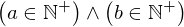
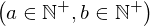
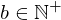
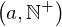
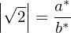
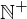
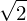

Expression of type And¶
from the theory of proveit.numbers.exponentiation¶
In [1]:
import proveit
# Automation is not needed when building an expression:
proveit.defaults.automation = False # This will speed things up.
proveit.defaults.inline_pngs = False # Makes files smaller.
%load_expr # Load the stored expression as 'stored_expr'
# import Expression classes needed to build the expression
from proveit import a, a_star, b, b_star
from proveit.logic import And, Equals, Exists, FALSE, Forall, Implies
from proveit.numbers import Abs, GCD, NaturalPos, frac, one, sqrt, two
In [2]:
# build up the expression from sub-expressions
sub_expr1 = [NaturalPos, NaturalPos]
sub_expr2 = Abs(sqrt(two))
expr = And(Exists([a, b], And(Equals(sub_expr2, frac(a, b)), Equals(GCD(a, b), one)), domains = sub_expr1), Forall([a_star, b_star], Implies(And(Equals(sub_expr2, frac(a_star, b_star)), Equals(GCD(a_star, b_star), one)), FALSE), domains = sub_expr1))
Out[2]:
In [3]:
# check that the built expression is the same as the stored expression
assert expr == stored_expr
assert expr._style_id == stored_expr._style_id
print("Passed sanity check: expr matches stored_expr")
In [4]:
# Show the LaTeX representation of the expression for convenience if you need it.
print(expr.latex())
In [5]:
expr.style_options()
Out[5]:
In [6]:
# display the expression information
expr.expr_info()
Out[6]:
| core type | sub-expressions | expression | |
|---|---|---|---|
| 0 | Operation | operator: 33 operands: 1 | |
| 1 | ExprTuple | 2, 3 | |
| 2 | Operation | operator: 4 operand: 8 | |
| 3 | Operation | operator: 6 operand: 9 | |
| 4 | Literal |  | |
| 5 | ExprTuple | 8 | |
| 6 | Literal |  | |
| 7 | ExprTuple | 9 | |
| 8 | Lambda | parameters: 43 body: 10 | |
| 9 | Lambda | parameters: 55 body: 11 | |
| 10 | Conditional | value: 12 condition: 13 |  |
| 11 | Conditional | value: 14 condition: 15 | |
| 12 | Operation | operator: 33 operands: 16 |  |
| 13 | Operation | operator: 33 operands: 17 |  |
| 14 | Operation | operator: 18 operands: 19 | |
| 15 | Operation | operator: 33 operands: 20 | |
| 16 | ExprTuple | 21, 22 |  |
| 17 | ExprTuple | 23, 24 |  |
| 18 | Literal |  | |
| 19 | ExprTuple | 25, 26 | |
| 20 | ExprTuple | 27, 28 | |
| 21 | Operation | operator: 45 operands: 29 |  |
| 22 | Operation | operator: 45 operands: 30 |  |
| 23 | Operation | operator: 36 operands: 31 |  |
| 24 | Operation | operator: 36 operands: 32 |  |
| 25 | Operation | operator: 33 operands: 34 |  |
| 26 | Literal |  | |
| 27 | Operation | operator: 36 operands: 35 | |
| 28 | Operation | operator: 36 operands: 37 | |
| 29 | ExprTuple | 49, 38 |  |
| 30 | ExprTuple | 39, 64 |  |
| 31 | ExprTuple | 47, 42 |  |
| 32 | ExprTuple | 48, 42 |  |
| 33 | Literal |  | |
| 34 | ExprTuple | 40, 41 | |
| 35 | ExprTuple | 57, 42 | |
| 36 | Literal |  | |
| 37 | ExprTuple | 58, 42 | |
| 38 | Operation | operator: 62 operands: 43 |  |
| 39 | Operation | operator: 54 operands: 43 |  |
| 40 | Operation | operator: 45 operands: 44 |  |
| 41 | Operation | operator: 45 operands: 46 |  |
| 42 | Literal |  | |
| 43 | ExprTuple | 47, 48 |  |
| 44 | ExprTuple | 49, 50 | |
| 45 | Literal |  | |
| 46 | ExprTuple | 51, 64 | |
| 47 | Variable |  | |
| 48 | Variable |  | |
| 49 | Operation | operator: 52 operand: 56 |  |
| 50 | Operation | operator: 62 operands: 55 |  |
| 51 | Operation | operator: 54 operands: 55 | |
| 52 | Literal |  | |
| 53 | ExprTuple | 56 |  |
| 54 | Literal |  | |
| 55 | ExprTuple | 57, 58 | |
| 56 | Operation | operator: 59 operands: 60 |  |
| 57 | Variable |  | |
| 58 | Variable |  | |
| 59 | Literal |  | |
| 60 | ExprTuple | 65, 61 |  |
| 61 | Operation | operator: 62 operands: 63 |  |
| 62 | Literal |  | |
| 63 | ExprTuple | 64, 65 |  |
| 64 | Literal |  | |
| 65 | Literal |  |